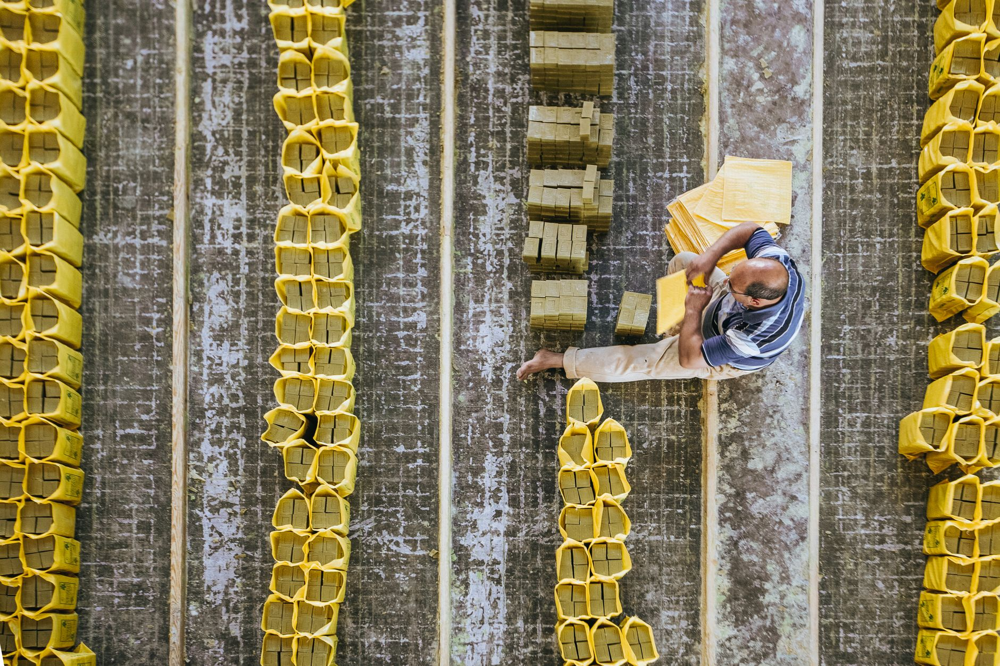

말라카 한국 반도체 거점 부상, ASEAN 우회 공급망 실제 조건

코리아헤럴드에 따르면 말라카주(州)는 한국의 전략적 ASEAN 대안 생산지로 공식 포지셔닝하고 있다. 말라카는 페낭·쿠알라룸푸르에 비해 토지 비용이 40~50% 저렴하고, 말라카 항만을 통한 싱가포르 경유 물류 접근성이 높다. 2024년 기준 말라카주의 외국인직접투자(FDI)는 전년 대비 28% 증가했으며 이 중 제조업 비중이 65%를 차지했다.
말레이시아는 현재 전 세계 반도체 후공정(패키징·테스트) 시장 점유율 13%를 보유한 글로벌 4위 반도체 제조 허브다. 인텔·인피니언·ST마이크로일렉트로닉스 등 주요 팹리스·IDM이 생산기지를 운영 중이며, 미국 칩스법(CHIPS Act)과 EU 반도체법 수혜를 받는 '친서방 허브'로 인증된 상태다.
한국 정부는 5개년 반도체 생산 2배 확대 계획과 연계해 해외 생산 거점 다변화를 병행 추진 중이다. 삼성전자는 말레이시아 세렘반(Seremban)에 후공정 라인을 운영 중이며, SK하이닉스는 청주 HBM 생산 증설과 동시에 동남아 후공정 파트너십 확대를 검토하고 있는 것으로 업계에 알려졌다.
미중 기술 분리가 심화되면서 말레이시아는 중국 시장과 미국 공급망 양방향 접근이 가능한 지리적 중립성을 무기로 활용하고 있다. 화웨이 등 중국 기업이 말레이시아를 통한 우회 조달을 시도한다는 미국의 우려가 있지만, 말레이시아 정부는 수출통제 이행 협력을 통해 미국과의 신뢰를 유지하는 줄타기 전략을 구사 중이다.
말라카의 부상은 단순한 비용 절감 논리가 아니다. 미국 수출통제 대상 기업에 납품하면서 동시에 중국 고객도 유지해야 하는 한국 기업들에게, 말레이시아는 '어느 쪽 규정도 직접 위반하지 않는' 지리적 완충지대로 기능한다. 이는 공급망 설계의 법적 리스크 분산 전략으로, 수년 내 한국 소부장 기업의 동반 진출이 가속화될 가능성이 높다.
그러나 말레이시아가 중국 우회 경로로 오용될 경우 미국의 대말레이시아 수출통제 강화 가능성도 내포한다. 2024년 미국 상무부가 말레이시아 기업 3곳을 엔티티 리스트에 올린 사례가 이미 선례로 존재한다. 한국 기업이 말레이시아 거점을 활용할 때 컴플라이언스 리스크를 과소평가하면 오히려 미국 규제의 직격탄이 될 수 있다.
말레이시아 현지 EMS(전자제조서비스) 기업 PG Precision, Vitrox 등은 한국·일본·대만 기업의 현지 생산 파트너 수요 증가로 수혜를 받는다. 특히 반도체 테스트 장비와 PCB 조립 분야에서 한국 기업과의 합작 또는 OEM 계약 증가가 예상된다.
한국 소부장 기업 중 반도체 공정 소재(CMP 슬러리, 포토레지스트, 특수 가스)를 공급하는 기업들은 삼성·SK하이닉스의 말레이시아 생산 확대에 동반 진출 기회를 얻는다. 현지 물류 창고·인증 시스템 구축 비용은 수억 원 수준으로, 말레이시아 진출 결정 시 선점 효과가 크다.
말레이시아 진출이 가속화되면 국내 후공정 패키징 인력과 라인의 공동화 위험이 높아진다. 특히 충북·경기 소재 중소 패키징 전문 기업들은 대기업의 해외 이전과 함께 주문 물량이 감소하는 구조적 압박에 노출될 수 있다.
베트남에 이미 생산기지를 구축한 한국 기업들은 말레이시아 추가 투자 검토 시 이중 운영 비용과 관리 복잡성 증가라는 딜레마에 직면한다. 지리적 분산이 리스크 헤지가 아닌 비용 증가 요인으로 전환되는 임계점 관리가 필요하다.
말레이시아 거점 투자를 검토하는 기업은 토지·인력 비용 비교에 앞서 미국 수출통제 컴플라이언스 체계 구축 비용을 선행 산정해야 한다. 엔티티 리스트 리스크 관리 비용이 입지 비용 절감분을 상회하는 시나리오를 시뮬레이션하지 않은 투자 결정은 후일 규제 리스크를 그대로 떠안게 된다.
말레이시아 동반 진출을 고려하는 소부장 기업은 현재 삼성·SK의 현지 구매팀과 소통하여 현지 소싱 전환 계획 여부를 먼저 확인해야 한다. 대기업의 현지 구매 전환 결정 없이 선투자하면 재고 손실로 이어진다.
실제 조달 현장에서는 — 말레이시아 패키징 라인에 소재를 공급할 때 가장 먼저 부딪히는 문제는 'REACH·RoHS 현지 인증'이 아니라 한국 본사의 품질 승인(Qualified Vendor List 등재)이 해외 법인에 자동 적용되지 않는다는 점이다. 국내에서 이미 납품 중인 기업도 말레이시아 법인 대상으로 별도 QVL 재등재 절차를 거쳐야 하며, 이 기간이 6~12개월에 달해 진출 타이밍을 놓치는 사례가 반복된다. 현지 진출 결정과 동시에 QVL 신청을 병행하는 것이 실전 공식이다.
이 포스팅은 쿠팡 파트너스 활동의 일환으로 수수료를 제공받습니다.